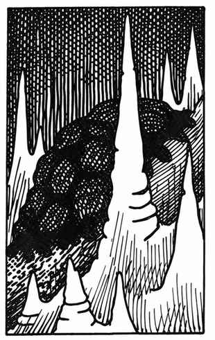

黑色布丁怪 · Black Pudding
 |
|
黑色布丁怪由成群的单细胞构成，通常只在地下出没，是一种食腐兼捕猎的怪物。它的身体结构使其能够流过狭窄缝隙，例如门下 1 寸宽的空隙；它在墙壁、天花板和地面上都能同样自如地移动。它细小的口器与唾液每个近战轮会对裸露的血肉造成 3–24 点伤害。若它要溶解木材以取得食物，每个近战轮可啃穿约 2 寸厚、面积与自身直径相当的木材。
黑色布丁怪的腐蚀性唾液也能溶解金属：锁子甲需 1 个近战轮，板甲需 2 个近战轮；魔法护甲每有 +1 加值，就额外需要 1 个近战轮。例如，+1 魔法板甲接触黑色布丁怪 3 个近战轮后才会溶解。若它被砍击或击打，就会分裂成两块或更多部分，每一部分都能继续攻击；受到闪电攻击时也会如此。寒冷对它无效，火焰则造成正常伤害，而且它会躲避火焰。黑色布丁怪有时呈灰、棕或白色。
生命值为 10–20 点时，直径约 5 尺；21–40 点时约 6 尺；41–60 点时约 7 尺；61–80 点时约 8 尺。即使是最小个体（或直径仅 1 尺的个体），也能造成完整伤害；较大的布丁怪只是有更多口器，平时并不会全部暴露出来。